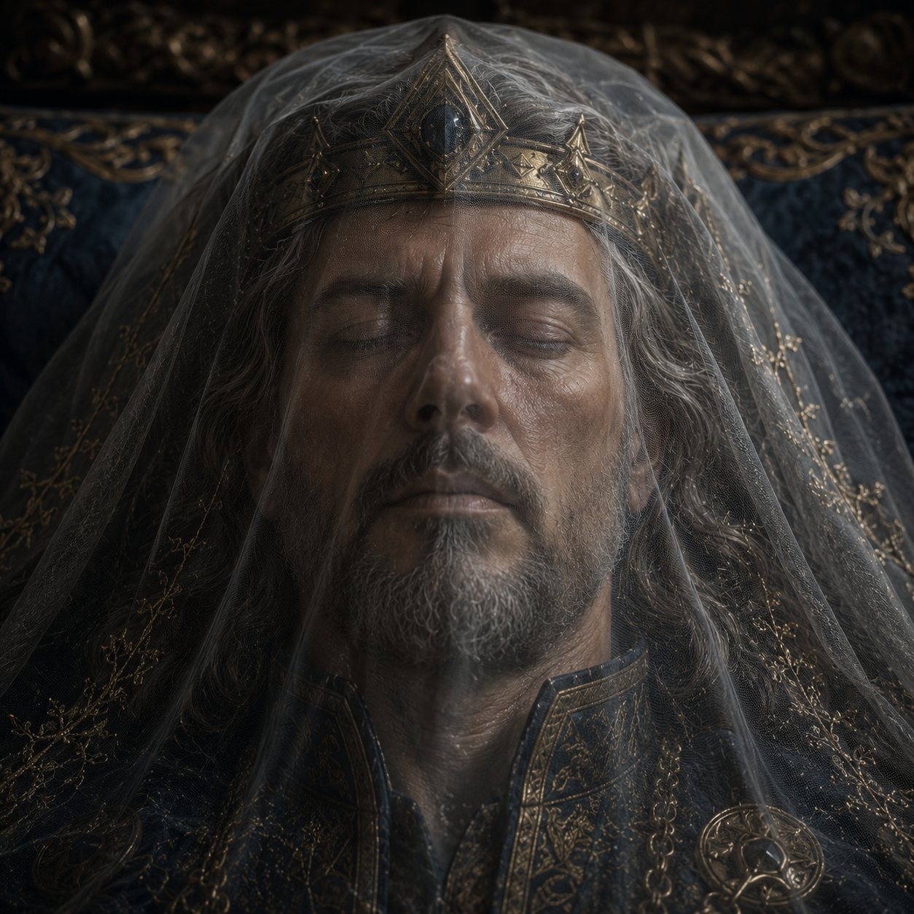

The Second Calamity became known throughout Impiltur as the Fall of the Heltharn Bloodline, the night the Chaos Phage consumed the royal house from within the very halls thought safest in the kingdom. Prince Edric, already weakened by fever, exhaustion, and the spiraling crimson rune-chains that circled his body like living shackles, collapsed into a final coma within the Citadel of the Stalwart King as healers, priests, and nobles watched helplessly. King Alric never abandoned his son’s side, remaining beside the prince even after whispers spread that the sickness was no natural plague. When the end came, it arrived not as death, but as invasion: Edric’s chest burst apart in an eruption of blood, infernal light, and tearing flesh as a horned fiend from the lower planes clawed its way into the mortal world before the horrified court. The erupting rune-chains blasted outward through the throne chamber, infecting attendants, but worst of all was the creature’s first act—it drove its gore-slick horns directly through King Alric, mortally wounding the ruler before his knights could react. Moments later, the Phage completed its work within the king himself. Before the eyes of the royal court, the body of the last great king of Impiltur ruptured in turn, opening another planar wound from which another fiend emerged screaming into the world. Thus ended the line of Alric not with ceremony or succession, but with blood, infernal corruption, and terror, transforming the chambers into a slaughterhouse and marking the Second Calamity as the moment the people of Impiltur realized the disasters consuming the realm were not merely natural catastrophes, but the opening moves of something apocalyptic and deliberate.

The Second Calamity, known as the Fall of the Stalwart Bloodline, happened when the Chaos Phage consumed Prince Edric and King Alric from within, releasing chaos.
The Second Calamity left Impiltur leaderless and divided, as the deaths of King Alric and Prince Edric shattered the royal line and ignited a debate about succession, against the backdrop of the Chaos Phage.
Rumors spread across Lyrabar that hidden heirs of Alric’s bloodline still live, that rival nobles have forged false claims to the throne, that Alric's will states his line of succession, and that some among the surviving court have already been secretly corrupted by the Chaos Phage.